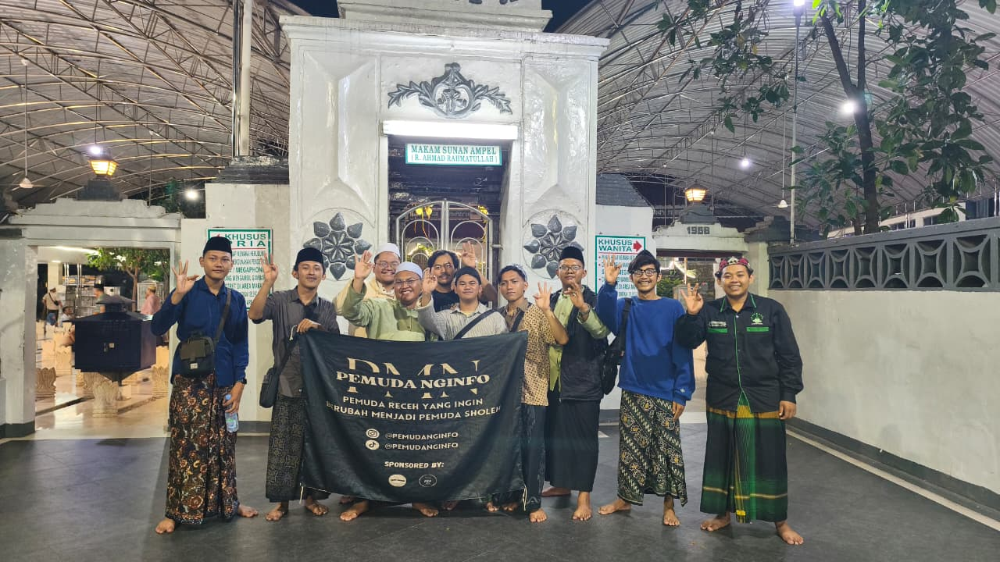

Komunitas Pemuda Nginfo (PMN) kembali menggelar kegiatan rutinan berupa ziarah ke makam Sunan Ampel, Surabaya, sebagai bentuk doa bersama menjelang dimulainya masa perkuliahan normal. Tradisi yang telah berlangsung sejak tahun 2023 ini menjadi salah satu agenda spiritual dan kebersamaan yang dijaga keberlangsungannya oleh para anggota komunitas.
Ziarah ini pertama kali dilakukan oleh para perintis PMN sebelum mereka resmi menjadi mahasiswa baru. Sejak saat itu, kegiatan ini menjadi rutinitas yang diteruskan oleh generasi berikutnya. Puncak kegiatan ziarah dilakukan pada bulan Februari, yaitu ziarah ke lima makam Wali Songo (wali limo), sebagai bentuk ikhtiar spiritual sebelum menghadapi semester genap. Hingga kini, di bulan Agustus menjelang semester ganjil, semangat itu masih tetap terjaga.
Tujuan utama dari kegiatan ziarah ini adalah memohon kelancaran dalam menjalani masa perkuliahan, kesibukan akademik, serta berbagai tantangan lain di dunia kampus. Selain sebagai bentuk refleksi diri, kegiatan ini juga menjadi ajang mempererat solidaritas antaranggota.
Tak hanya ziarah, agenda kali ini juga dirangkai dengan Rapat Komunal ke-4, yang membahas persiapan acara Maulid Nabi Muhammad SAW yang akan diselenggarakan pada bulan September mendatang. Seusai rapat, para anggota mengadakan forum diskusi yang membahas rencana dan tujuan masing-masing setelah memasuki masa perkuliahan.
Alhamdulillah, seluruh rangkaian acara berjalan dengan lancar dan penuh antusiasme. Kegiatan ini tidak hanya memberikan energi positif bagi internal komunitas, tetapi juga diharapkan mampu menularkan aura kebaikan ke lingkungan masyarakat sekitar.
Semoga rutinitas ini terus membawa keberkahan, memperkuat nilai spiritual, serta menumbuhkan semangat kebersamaan dan kontribusi positif bagi sesama.